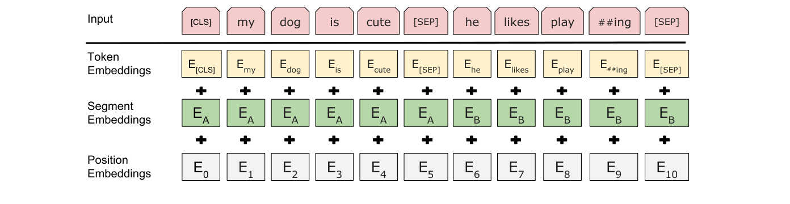
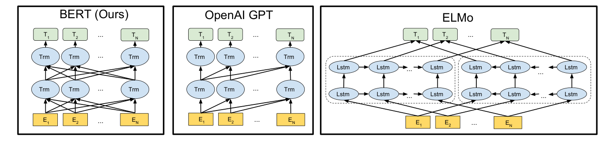
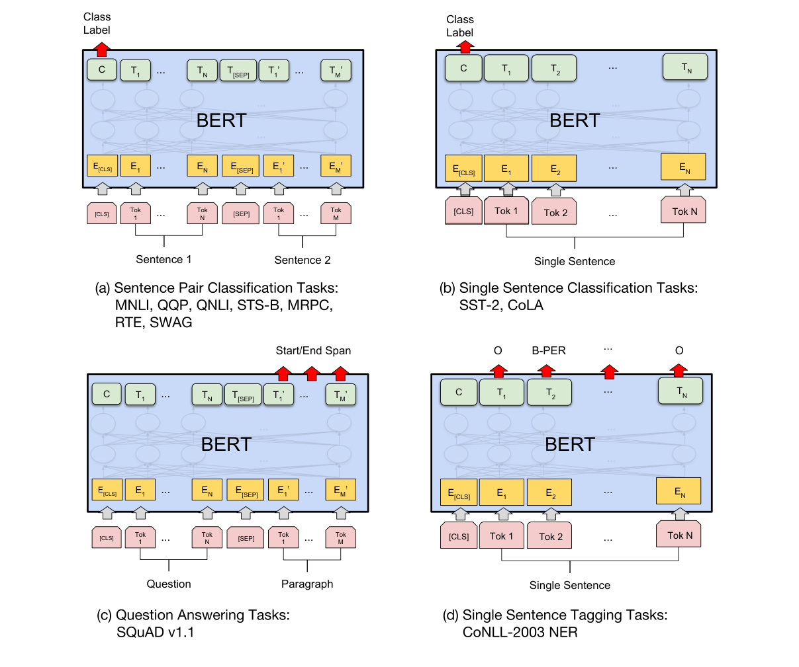
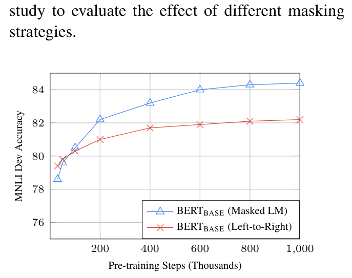

摘要给出三个层次的信号：方法（双向预训练）、用法（加一层输出头微调）、战绩（11 项任务 SOTA）。但最该留意的是那句 jointly conditioning on both left and right context in all layers——「每一层都联合左右上下文」，这是 BERT 与 ELMo（浅层拼接）的分水岭。
EN
We introduce a new language representation model called BERT, which stands for Bidirectional Encoder Representations from Transformers. Unlike recent language representation models (Peters et al., 2018a; Radford et al., 2018), BERT is designed to pre-train deep bidirectional representations from unlabeled text by jointly conditioning on both left and right context in all layers.
As a result, the pre-trained BERT model can be fine-tuned with just one additional output layer to create state-of-the-art models for a wide range of tasks, such as question answering and language inference, without substantial task-specific architecture modifications.
BERT is conceptually simple and empirically powerful. It obtains new state-of-the-art results on eleven natural language processing tasks, including pushing the GLUE score to 80.5% (7.7% point absolute improvement), MultiNLI accuracy to 86.7% (4.6% absolute improvement), SQuAD v1.1 question answering Test F1 to 93.2 (1.5 point absolute improvement) and SQuAD v2.0 Test F1 to 83.1 (5.1 point absolute improvement).
Language model pre-training has been shown to be effective for improving many natural language processing tasks (Dai and Le, 2015; Peters et al., 2018a; Radford et al., 2018; Howard and Ruder, 2018). These include sentence-level tasks such as natural language inference (Bowman et al., 2015; Williams et al., 2018) and paraphrasing (Dolan and Brockett, 2005), which aim to predict the relationships between sentences by analyzing them holistically, as well as token-level tasks such as named entity recognition and question answering, where models are required to produce fine-grained output at the token level (Tjong Kim Sang and De Meulder, 2003; Rajpurkar et al., 2016).
译文
语言模型预训练已被证明能有效改善许多自然语言处理任务（Dai 和 Le，2015；Peters 等，2018a；Radford 等，2018；Howard 和 Ruder，2018）。这些任务包括句子级任务，如自然语言推理（Bowman 等，2015；Williams 等，2018）和复述识别（Dolan 和 Brockett，2005）——它们需要通过整体分析来预测句子之间的关系；也包括词元级任务，如命名实体识别和问答——模型需要在词元粒度上产生细粒度输出（Tjong Kim Sang 和 De Meulder，2003；Rajpurkar 等，2016）。
EN
There are two existing strategies for applying pre-trained language representations to downstream tasks: feature-based and fine-tuning. The feature-based approach, such as ELMo (Peters et al., 2018a), uses task-specific architectures that include the pre-trained representations as additional features. The fine-tuning approach, such as the Generative Pre-trained Transformer (OpenAI GPT) (Radford et al., 2018), introduces minimal task-specific parameters, and is trained on the downstream tasks by simply fine-tuning all pre-trained parameters. The two approaches share the same objective function during pre-training, where they use unidirectional language models to learn general language representations.
We argue that current techniques restrict the power of the pre-trained representations, especially for the fine-tuning approaches. The major limitation is that standard language models are unidirectional, and this limits the choice of architectures that can be used during pre-training. For example, in OpenAI GPT, the authors use a left-to-right architecture, where every token can only attend to previous tokens in the self-attention layers of the Transformer (Vaswani et al., 2017). Such restrictions are sub-optimal for sentence-level tasks, and could be very harmful when applying fine-tuning based approaches to token-level tasks such as question answering, where it is crucial to incorporate context from both directions.
In this paper, we improve the fine-tuning based approaches by proposing BERT: Bidirectional Encoder Representations from Transformers. BERT alleviates the previously mentioned unidirectionality constraint by using a "masked language model" (MLM) pre-training objective, inspired by the Cloze task (Taylor, 1953). The masked language model randomly masks some of the tokens from the input, and the objective is to predict the original vocabulary id of the masked word based only on its context.
译文
本文通过提出 BERT 来改进微调式方法。BERT 借助受完形填空任务（Cloze task，Taylor，1953）启发的掩码语言模型（masked language model，MLM）预训练目标，缓解了上述单向性约束。掩码语言模型随机遮盖输入中的一些词元，目标是仅根据其上下文来预测被遮盖词的原始词表编号。
Unlike left-to-right language model pre-training, the MLM objective enables the representation to fuse the left and the right context, which allows us to pre-train a deep bidirectional Transformer. In addition to the masked language model, we also use a "next sentence prediction" task that jointly pre-trains text-pair representations. The contributions of our paper are as follows:
• We demonstrate the importance of bidirectional pre-training for language representations. Unlike Radford et al. (2018), which uses unidirectional language models for pre-training, BERT uses masked language models to enable pre-trained deep bidirectional representations. This is also in contrast to Peters et al. (2018a), which uses a shallow concatenation of independently trained left-to-right and right-to-left LMs.
• We show that pre-trained representations reduce the need for many heavily-engineered task-specific architectures. BERT is the first fine-tuning based representation model that achieves state-of-the-art performance on a large suite of sentence-level and token-level tasks, outperforming many task-specific architectures.
Learning widely applicable representations of words has been an active area of research for decades, including non-neural (Brown et al., 1992; Ando and Zhang, 2005; Blitzer et al., 2006) and neural (Mikolov et al., 2013; Pennington et al., 2014) methods. Pre-trained word embeddings are an integral part of modern NLP systems, offering significant improvements over embeddings learned from scratch (Turian et al., 2010). To pre-train word embedding vectors, left-to-right language modeling objectives have been used (Mnih and Hinton, 2009), as well as objectives to discriminate correct from incorrect words in left and right context (Mikolov et al., 2013).
These approaches have been generalized to coarser granularities, such as sentence embeddings (Kiros et al., 2015; Logeswaran and Lee, 2018) or paragraph embeddings (Le and Mikolov, 2014). To train sentence representations, prior work has used objectives to rank candidate next sentences (Jernite et al., 2017; Logeswaran and Lee, 2018), left-to-right generation of next sentence words given a representation of the previous sentence (Kiros et al., 2015), or denoising auto-encoder derived objectives (Hill et al., 2016).
ELMo and its predecessor (Peters et al., 2017, 2018a) generalize traditional word embedding research along a different dimension. They extract context-sensitive features from a left-to-right and a right-to-left language model. The contextual representation of each token is the concatenation of the left-to-right and right-to-left representations. When integrating contextual word embeddings with existing task-specific architectures, ELMo advances the state of the art for several major NLP benchmarks (Peters et al., 2018a) including question answering (Rajpurkar et al., 2016), sentiment analysis (Socher et al., 2013), and named entity recognition (Tjong Kim Sang and De Meulder, 2003). Melamud et al. (2016) proposed learning contextual representations through a task to predict a single word from both left and right context using LSTMs. Similar to ELMo, their model is feature-based and not deeply bidirectional. Fedus et al. (2018) shows that the cloze task can be used to improve the robustness of text generation models.
译文
ELMo 及其前身（Peters 等，2017，2018a）沿另一个维度推广了传统词嵌入研究。它们从一个左到右语言模型和一个右到左语言模型中提取上下文敏感的特征，每个词元的上下文表示是左到右与右到左表示的拼接。当把上下文词嵌入与现有任务专用架构结合时，ELMo 在多个重要 NLP 基准上推进了最先进水平（Peters 等，2018a），包括问答（Rajpurkar 等，2016）、情感分析（Socher 等，2013）与命名实体识别（Tjong Kim Sang 和 De Meulder，2003）。Melamud 等（2016）提出用 LSTM 从左右上下文预测单个词的任务来学习上下文表示。与 ELMo 类似，他们的模型是特征式的，且不是深层双向。Fedus 等（2018）表明完形填空任务可用于提升文本生成模型的鲁棒性。
As with the feature-based approaches, the first works in this direction only pre-trained word embedding parameters from unlabeled text (Collobert and Weston, 2008). More recently, sentence or document encoders which produce contextual token representations have been pre-trained from unlabeled text and fine-tuned for a supervised downstream task (Dai and Le, 2015; Howard and Ruder, 2018; Radford et al., 2018). The advantage of these approaches is that few parameters need to be learned from scratch. At least partly due to this advantage, OpenAI GPT (Radford et al., 2018) achieved previously state-of-the-art results on many sentence-level tasks from the GLUE benchmark (Wang et al., 2018a). Left-to-right language modeling and auto-encoder objectives have been used for pre-training such models (Howard and Ruder, 2018; Radford et al., 2018; Dai and Le, 2015).
2.3 Transfer Learning from Supervised Data 2.3 来自监督数据的迁移学习
EN
There has also been work showing effective transfer from supervised tasks with large datasets, such as natural language inference (Conneau et al., 2017) and machine translation (McCann et al., 2017). Computer vision research has also demonstrated the importance of transfer learning from large pre-trained models, where an effective recipe is to fine-tune models pre-trained with ImageNet (Deng et al., 2009; Yosinski et al., 2014).
We introduce BERT and its detailed implementation in this section. There are two steps in our framework: pre-training and fine-tuning. During pre-training, the model is trained on unlabeled data over different pre-training tasks. For fine-tuning, the BERT model is first initialized with the pre-trained parameters, and all of the parameters are fine-tuned using labeled data from the downstream tasks. Each downstream task has separate fine-tuned models, even though they are initialized with the same pre-trained parameters. The question-answering example in Figure 1 will serve as a running example for this section.
Figure 1. Overall pre-training and fine-tuning procedures for BERT. Apart from output layers, the same architectures are used in both pre-training and fine-tuning. The same pre-trained model parameters are used to initialize models for different down-stream tasks. During fine-tuning, all parameters are fine-tuned. [CLS] is a special symbol added in front of every input example, and [SEP] is a special separator token (e.g. separating questions/answers).图 1 · BERT 的预训练与微调整体流程。除输出层外，预训练与微调使用相同的架构；同一份预训练参数用于初始化不同下游任务的模型，微调时所有参数都会被更新。[CLS] 是加在每个输入样本前的特殊符号，[SEP] 是分隔符（例如分隔问题与答案）。
A distinctive feature of BERT is its unified architecture across different tasks. There is minimal difference between the pre-trained architecture and the final downstream architecture.
译文
BERT 的一个显著特点是：跨任务架构统一。预训练架构与最终下游架构之间几乎没有差别。
Model Architecture 模型架构
EN
BERT's model architecture is a multi-layer bidirectional Transformer encoder based on the original implementation described in Vaswani et al. (2017) and released in the tensor2tensor library. Because the use of Transformers has become common and our implementation is almost identical to the original, we will omit an exhaustive background description of the model architecture and refer readers to Vaswani et al. (2017) as well as excellent guides such as "The Annotated Transformer."
解读 · 这句话把 BERT 的血统说得很清楚：**BERT 没有发明新架构，它用的是 Transformer 的编码器部分**。上一篇论文（Attention Is All You Need）在这里直接成为基础设施。把本仓库第 001 篇与本篇连起来读，因果链非常清晰。
EN
In this work, we denote the number of layers (i.e., Transformer blocks) as L, the hidden size as H, and the number of self-attention heads as A. We primarily report results on two model sizes: BERTBASE (L=12, H=768, A=12, Total Parameters=110M) and BERTLARGE (L=24, H=1024, A=16, Total Parameters=340M). BERTBASE was chosen to have the same model size as OpenAI GPT for comparison purposes. Critically, however, the BERT Transformer uses bidirectional self-attention, while the GPT Transformer uses constrained self-attention where every token can only attend to context to its left.
To make BERT handle a variety of down-stream tasks, our input representation is able to unambiguously represent both a single sentence and a pair of sentences (e.g., ⟨Question, Answer⟩) in one token sequence. Throughout this work, a "sentence" can be an arbitrary span of contiguous text, rather than an actual linguistic sentence. A "sequence" refers to the input token sequence to BERT, which may be a single sentence or two sentences packed together.
We use WordPiece embeddings (Wu et al., 2016) with a 30,000 token vocabulary. The first token of every sequence is always a special classification token ([CLS]). The final hidden state corresponding to this token is used as the aggregate sequence representation for classification tasks. Sentence pairs are packed together into a single sequence. We differentiate the sentences in two ways. First, we separate them with a special token ([SEP]). Second, we add a learned embedding to every token indicating whether it belongs to sentence A or sentence B. As shown in Figure 1, we denote input embedding as E, the final hidden vector of the special [CLS] token as C ∈ RH, and the final hidden vector for the i-th input token as Ti ∈ RH.
译文
我们使用词表大小为 30000 的 WordPiece 嵌入（Wu 等，2016）。每个序列的第一个词元总是一个特殊的分类词元 [CLS]，它对应的最后隐状态被用作分类任务的序列聚合表示。句子对会被打包成一个序列，我们用两种方式区分两个句子：其一，用特殊词元 [SEP] 分隔；其二，为每个词元添加一个可学习的段落嵌入，表明它属于句子 A 还是句子 B。如图 1 所示，我们把输入嵌入记为 E，特殊 [CLS] 词元的最后隐向量记为 C ∈ RH，第 i 个输入词元的最后隐向量记为 Ti ∈ RH。

Figure 2: BERT input representation. The input embeddings are the sum of the token embeddings, the segmentation embeddings and the position embeddings.图 2 · BERT 的输入表示。输入嵌入是词元嵌入、段落嵌入与位置嵌入之和。
读图 · 三种嵌入逐元素相加：词元嵌入给词义，段落嵌入告诉模型「你现在在第一句还是第二句」，位置嵌入给顺序。注意 [CLS] 位置的 C 后来承担了「整句话的摘要向量」角色——今天很多人直接拿它做句向量，但原论文提醒：未经微调的 C 并不是一个有意义的句表示（见脚注 6）。
EN
For a given token, its input representation is constructed by summing the corresponding token, segment, and position embeddings. A visualization of this construction can be seen in Figure 2.
译文
对给定词元，其输入表示由对应的词元嵌入、段落嵌入和位置嵌入相加而成。图 2 展示了这一构造。
3.1 Pre-training BERT 3.1 预训练 BERT
EN
Unlike Peters et al. (2018a) and Radford et al. (2018), we do not use traditional left-to-right or right-to-left language models to pre-train BERT. Instead, we pre-train BERT using two unsupervised tasks, described in this section. This step is presented in the left part of Figure 1.
Intuitively, it is reasonable to believe that a deep bidirectional model is strictly more powerful than either a left-to-right model or the shallow concatenation of a left-to-right and a right-to-left model. Unfortunately, standard conditional language models can only be trained left-to-right or right-to-left, since bidirectional conditioning would allow each word to indirectly "see itself", and the model could trivially predict the target word in a multi-layered context.
In order to train a deep bidirectional representation, we simply mask some percentage of the input tokens at random, and then predict those masked tokens. We refer to this procedure as a "masked LM" (MLM), although it is often referred to as a Cloze task in the literature (Taylor, 1953). In this case, the final hidden vectors corresponding to the mask tokens are fed into an output softmax over the vocabulary, as in a standard LM. In all of our experiments, we mask 15% of all WordPiece tokens in each sequence at random. In contrast to denoising auto-encoders (Vincent et al., 2008), we only predict the masked words rather than reconstructing the entire input.
Although this allows us to obtain a bidirectional pre-trained model, a downside is that we are creating a mismatch between pre-training and fine-tuning, since the [MASK] token does not appear during fine-tuning. To mitigate this, we do not always replace "masked" words with the actual [MASK] token. The training data generator chooses 15% of the token positions at random for prediction. If the i-th token is chosen, we replace the i-th token with (1) the [MASK] token 80% of the time (2) a random token 10% of the time (3) the unchanged i-th token 10% of the time. Then, Ti will be used to predict the original token with cross entropy loss. We compare variations of this procedure in Appendix C.2.
Task #2: Next Sentence Prediction (NSP) 任务二：下一句预测（NSP）
EN
Many important downstream tasks such as Question Answering (QA) and Natural Language Inference (NLI) are based on understanding the relationship between two sentences, which is not directly captured by language modeling. In order to train a model that understands sentence relationships, we pre-train for a binarized next sentence prediction task that can be trivially generated from any monolingual corpus. Specifically, when choosing the sentences A and B for each pre-training example, 50% of the time B is the actual next sentence that follows A (labeled as IsNext), and 50% of the time it is a random sentence from the corpus (labeled as NotNext).
译文
许多重要下游任务，如问答（QA）与自然语言推理（NLI），都建立在理解两个句子之间的关系之上，而这无法被语言建模直接捕捉。为训练一个理解句子关系的模型，我们预训练了一个二值化的下一句预测任务，它可以从任何单语语料库中轻易生成。具体而言，为每个预训练样本选择句子 A 和 B 时，50% 的情况下 B 是紧接 A 的真实下一句（标记为 IsNext），另外 50% 的情况下 B 是语料库中的一个随机句子（标记为 NotNext）。
EN
As we show in Figure 1, C is used for next sentence prediction (NSP). Despite its simplicity, we demonstrate in Section 5.1 that pre-training towards this task is very beneficial to both QA and NLI.
The pre-training procedure largely follows the existing literature on language model pre-training. For the pre-training corpus we use the BooksCorpus (800M words) (Zhu et al., 2015) and English Wikipedia (2,500M words). For Wikipedia we extract only the text passages and ignore lists, tables, and headers. It is critical to use a document-level corpus rather than a shuffled sentence-level corpus such as the Billion Word Benchmark (Chelba et al., 2013) in order to extract long contiguous sequences.
译文
预训练流程基本遵循语言模型预训练的已有文献。预训练语料使用 BooksCorpus（8 亿词，Zhu 等，2015）与英文维基百科（25 亿词）。对维基百科，我们只抽取正文段落，忽略列表、表格和标题。必须使用文档级语料而非像 Billion Word Benchmark（Chelba 等，2013）那样被打乱的句子级语料，这一点至关重要——这样才能抽取长的连续序列。
Fine-tuning is straightforward since the self-attention mechanism in the Transformer allows BERT to model many downstream tasks—whether they involve single text or text pairs—by swapping out the appropriate inputs and outputs. For applications involving text pairs, a common pattern is to independently encode text pairs before applying bidirectional cross attention, such as Parikh et al. (2016); Seo et al. (2017). BERT instead uses the self-attention mechanism to unify these two stages, as encoding a concatenated text pair with self-attention effectively includes bidirectional cross attention between two sentences.
For each task, we simply plug in the task-specific inputs and outputs into BERT and fine-tune all the parameters end-to-end. At the input, sentence A and sentence B from pre-training are analogous to (1) sentence pairs in paraphrasing, (2) hypothesis-premise pairs in entailment, (3) question-passage pairs in question answering, and (4) a degenerate text-∅ pair in text classification or sequence tagging. At the output, the token representations are fed into an output layer for token-level tasks, such as sequence tagging or question answering, and the [CLS] representation is fed into an output layer for classification, such as entailment or sentiment analysis.
译文
对每个任务，我们只需把任务专用的输入与输出接入 BERT，然后端到端微调所有参数。在输入端，预训练时的句子 A 与 B 分别对应：(1) 复述任务中的句子对；(2) 蕴含任务中的假设—前提对；(3) 问答中的问句—段落对；(4) 文本分类或序列标注中退化的「文本—空」对。在输出端，词元表示被送入输出层以完成词元级任务（如序列标注或问答），而 [CLS] 表示被送入输出层以完成分类任务（如蕴含判断或情感分析）。
EN
Compared to pre-training, fine-tuning is relatively inexpensive. All of the results in the paper can be replicated in at most 1 hour on a single Cloud TPU, or a few hours on a GPU, starting from the exact same pre-trained model. We describe the task-specific details in the corresponding subsections of Section 4. More details can be found in Appendix A.5.
The General Language Understanding Evaluation (GLUE) benchmark (Wang et al., 2018a) is a collection of diverse natural language understanding tasks. Detailed descriptions of GLUE datasets are included in Appendix B.1. To fine-tune on GLUE, we represent the input sequence (for single sentence or sentence pairs) as described in Section 3, and use the final hidden vector C ∈ RH corresponding to the first input token ([CLS]) as the aggregate representation. The only new parameters introduced during fine-tuning are classification layer weights W ∈ RK×H, where K is the number of labels. We compute a standard classification loss with C and W, i.e., log(softmax(CWT)).
译文
通用语言理解评估基准 GLUE（Wang 等，2018a）汇集了多种多样的自然语言理解任务，各数据集的详细描述见附录 B.1。在 GLUE 上微调时，我们按第 3 节所述表示输入序列（单句或句对），并使用与第一个输入词元 [CLS] 对应的最后隐向量 C ∈ RH 作为聚合表示。微调中唯一引入的新参数是分类层权重 W ∈ RK×H（K 为标签数）。我们用 C 和 W 计算标准分类损失，即 log(softmax(CWT))。
We use a batch size of 32 and fine-tune for 3 epochs over the data for all GLUE tasks. For each task, we selected the best fine-tuning learning rate (among 5e-5, 4e-5, 3e-5, and 2e-5) on the Dev set. Additionally, for BERTLARGE we found that fine-tuning was sometimes unstable on small datasets, so we ran several random restarts and selected the best model on the Dev set.
Results are presented in Table 1. Both BERTBASE and BERTLARGE outperform all systems on all tasks by a substantial margin, obtaining 4.5% and 7.0% respective average accuracy improvement over the prior state of the art. Note that BERTBASE and OpenAI GPT are nearly identical in terms of model architecture apart from the attention masking. For the largest and most widely reported GLUE task, MNLI, BERT obtains a 4.6% absolute accuracy improvement. On the official GLUE leaderboard, BERTLARGE obtains a score of 80.5, compared to OpenAI GPT, which obtains 72.8 as of the date of writing.
We find that BERTLARGE significantly outperforms BERTBASE across all tasks, especially those with very little training data. The effect of model size is explored more thoroughly in Section 5.2.
The Stanford Question Answering Dataset (SQuAD v1.1) is a collection of 100k crowdsourced question/answer pairs (Rajpurkar et al., 2016). Given a question and a passage from Wikipedia containing the answer, the task is to predict the answer text span in the passage. As shown in Figure 1, in the question answering task, we represent the input question and passage as a single packed sequence, with the question using the A embedding and the passage using the B embedding. We only introduce a start vector S ∈ RH and an end vector E ∈ RH during fine-tuning.
译文
斯坦福问答数据集（SQuAD v1.1）包含 10 万条众包问答对（Rajpurkar 等，2016）。给定一个问题和一段包含答案的维基百科文本，任务是预测答案在段落中的文本跨度。如图 1 所示，在问答任务中，我们把输入问题与段落表示为一个打包序列：问题使用 A 段落嵌入，段落使用 B 段落嵌入。微调时只引入一个起始向量 S ∈ RH 和一个结束向量 E ∈ RH。
(1)
Pi = eS·Ti / Σj eS·Tj ; score(i,j) = S·Ti + E·Tj
公式解读 · 式 (1)：词元 i 作为答案起点的概率，是它与学习到的起始向量 S 的点积经全段 softmax 后的结果；终点同理用 E。候选跨度 (i, j) 的分数是 S·Ti + E·Tj，取 j ≥ i 中分数最高者作为预测。整个问答头只有 2 个向量（2H 个参数）——这就是「加一层输出头」的具体含义。
EN
The score of a candidate span from position i to position j is defined as S·Ti + E·Tj, and the maximum scoring span where j ≥ i is used as a prediction. The training objective is the sum of the log-likelihoods of the correct start and end positions. We fine-tune for 3 epochs with a learning rate of 5e-5 and a batch size of 32.
译文
从位置 i 到位置 j 的候选跨度分数定义为 S·Ti + E·Tj，取满足 j ≥ i 的最高分跨度作为预测。训练目标是正确起始位置与结束位置的对数似然之和。我们用 5e-5 学习率、批大小 32 微调 3 个 epoch。
表 2 · Table 2 SQuAD v1.1 结果（EM / F1）
BERT 单模型 F1 已超过此前最好的集成系统；加上 TriviaQA 数据后，集成达到 93.2 F1，超过人类水平（91.2）。
系统
Dev EM
Dev F1
Test EM
Test F1
人类（Human）
—
—
82.3
91.2
#1 集成 · nlnet
—
—
86.0
91.7
BiDAF + ELMo（单模型）
—
85.6
—
85.8
BERTBASE（单模型）
80.8
88.5
—
—
BERTLARGE（单模型）
84.1
90.9
—
—
BERTLARGE（集成 + TriviaQA）
86.2
92.2
87.4
93.2
EN
Our best performing system outperforms the top leaderboard system by +1.5 F1 in ensembling and +1.3 F1 as a single system. In fact, our single BERT model outperforms the top ensemble system in terms of F1 score. Without TriviaQA fine-tuning data, we only lose 0.1-0.4 F1, still outperforming all existing systems by a wide margin.
The SQuAD 2.0 task extends the SQuAD 1.1 problem definition by allowing for the possibility that no short answer exists in the provided paragraph, making the problem more realistic. We use a simple approach to extend the SQuAD v1.1 BERT model for this task. We treat questions that do not have an answer as having an answer span with start and end at the [CLS] token. The probability space for the start and end answer span positions is extended to include the position of the [CLS] token. For prediction, we compare the score of the no-answer span: snull = S·C + E·C to the score of the best non-null span. We predict a non-null answer when the best span score exceeds snull + τ, where the threshold τ is selected on the dev set to maximize F1.
The results compared to prior leaderboard entries and top published work are shown in Table 3, excluding systems that use BERT as one of their components. We observe a +5.1 F1 improvement over the previous best system.
v2.0 引入「无答案」问题，更接近真实场景。BERTLARGE 单模型即达 83.1 Test F1，比此前最好系统高 5.1 个点。
系统
Dev EM
Dev F1
Test EM
Test F1
人类（Human）
86.3
89.0
86.9
89.5
#1 单模型 · MIR-MRC
—
—
74.8
78.0
SLQA+（单模型）
—
71.4
74.4
—
BERTLARGE（单模型）
78.7
81.9
80.0
83.1
4.4 SWAG 4.4 SWAG 常识推理
EN
The Situations With Adversarial Generations (SWAG) dataset contains 113k sentence-pair completion examples that evaluate grounded commonsense inference (Zellers et al., 2018). Given a sentence, the task is to choose the most plausible continuation among four choices. When fine-tuning on the SWAG dataset, we construct four input sequences, each containing the concatenation of the given sentence (sentence A) and a possible continuation (sentence B). The only task-specific parameters introduced is a vector whose dot product with the [CLS] token representation C denotes a score for each choice which is normalized with a softmax layer.
译文
SWAG（Situations With Adversarial Generations）数据集包含 11.3 万个句子对补全样本，用于评估有根据的常识推理（Zellers 等，2018）。给定一个句子，任务是从四个选项中选出最合理的后续。在 SWAG 上微调时，我们构造四个输入序列，每个都包含给定句子（句子 A）与一个可能后续（句子 B）的拼接。唯一引入的任务专用参数是一个向量，它与 [CLS] 表示 C 的点积给出每个选项的分数，再经 softmax 归一化。
EN
We fine-tune the model for 3 epochs with a learning rate of 2e-5 and a batch size of 16. Results are presented in Table 4. BERTLARGE outperforms the authors' baseline ESIM+ELMo system by +27.1% and OpenAI GPT by 8.3%.
We demonstrate the importance of the deep bidirectionality of BERT by evaluating two pre-training objectives using exactly the same pre-training data, fine-tuning scheme, and hyperparameters as BERTBASE: No NSP: A bidirectional model which is trained using the "masked LM" (MLM) but without the "next sentence prediction" (NSP) task. LTR & No NSP: A left-context-only model which is trained using a standard Left-to-Right (LTR) LM, rather than an MLM. The left-only constraint was also applied at fine-tuning, because removing it introduced a pre-train/fine-tune mismatch that degraded downstream performance. Additionally, this model was pre-trained without the NSP task. This is directly comparable to OpenAI GPT, but using our larger training dataset, our input representation, and our fine-tuning scheme.
We first examine the impact brought by the NSP task. In Table 5, we show that removing NSP hurts performance significantly on QNLI, MNLI, and SQuAD 1.1. Next, we evaluate the impact of training bidirectional representations by comparing "No NSP" to "LTR & No NSP". The LTR model performs worse than the MLM model on all tasks, with large drops on MRPC and SQuAD.
For SQuAD it is intuitively clear that a LTR model will perform poorly at token predictions, since the token-level hidden states have no right-side context. In order to make a good faith attempt at strengthening the LTR system, we added a randomly initialized BiLSTM on top. This does significantly improve results on SQuAD, but the results are still far worse than those of the pre-trained bidirectional models. The BiLSTM hurts performance on the GLUE tasks.
We recognize that it would also be possible to train separate LTR and RTL models and represent each token as the concatenation of the two models, as ELMo does. However: (a) this is twice as expensive as a single bidirectional model; (b) this is non-intuitive for tasks like QA, since the RTL model would not be able to condition the answer on the question; (c) this is strictly less powerful than a deep bidirectional model, since it can use both left and right context at every layer.
In this section, we explore the effect of model size on fine-tuning task accuracy. We trained a number of BERT models with a differing number of layers, hidden units, and attention heads, while otherwise using the same hyperparameters and training procedure as described previously. Results on selected GLUE tasks are shown in Table 6. In this table, we report the average Dev Set accuracy from 5 random restarts of fine-tuning. We can see that larger models lead to a strict accuracy improvement across all four datasets, even for MRPC which only has 3,600 labeled training examples, and is substantially different from the pre-training tasks.
It has long been known that increasing the model size will lead to continual improvements on large-scale tasks such as machine translation and language modeling. However, we believe that this is the first work to demonstrate convincingly that scaling to extreme model sizes also leads to large improvements on very small scale tasks, provided that the model has been sufficiently pre-trained. Peters et al. (2018b) presented mixed results on the downstream task impact of increasing the pre-trained bi-LM size from two to four layers and Melamud et al. (2016) mentioned in passing that increasing hidden dimension size from 200 to 600 helped, but increasing further to 1,000 did not bring further improvements.
Both of these prior works used a feature-based approach — we hypothesize that when the model is fine-tuned directly on the downstream tasks and uses only a very small number of randomly initialized additional parameters, the task-specific models can benefit from the larger, more expressive pre-trained representations even when downstream task data is very small.
5.3 Feature-based Approach with BERT 5.3 使用 BERT 的特征式方法
EN
All of the BERT results presented so far have used the fine-tuning approach, where a simple classification layer is added to the pre-trained model, and all parameters are jointly fine-tuned on a downstream task. However, the feature-based approach, where fixed features are extracted from the pre-trained model, has certain advantages. First, not all tasks can be easily represented by a Transformer encoder architecture, and therefore require a task-specific model architecture to be added. Second, there are major computational benefits to pre-compute an expensive representation of the training data once and then run many experiments with cheaper models on top of this representation.
In this section, we compare the two approaches by applying BERT to the CoNLL-2003 Named Entity Recognition (NER) task (Tjong Kim Sang and De Meulder, 2003). In the input to BERT, we use a case-preserving WordPiece model, and we include the maximal document context provided by the data. Following standard practice, we formulate this as a tagging task but do not use a CRF layer in the output. We use the representation of the first sub-token as the input to the token-level classifier over the NER label set. To ablate the fine-tuning approach, we apply the feature-based approach by extracting the activations from one or more layers without fine-tuning any parameters of BERT. These contextual embeddings are used as input to a randomly initialized two-layer 768-dimensional BiLSTM before the classification layer.
译文
本节通过把 BERT 用于 CoNLL-2003 命名实体识别（NER）任务（Tjong Kim Sang 和 De Meulder，2003）来比较两种方法。在 BERT 输入中，我们使用保留大小写的 WordPiece 模型，并纳入数据提供的最大文档上下文。按标准做法，我们把它表述为标注任务，但输出层不使用 CRF。我们用每个词第一个子词元的表示作为 NER 标签集上词元级分类器的输入。为与微调式方法做消融，我们采用特征式方法：从一层或多层的激活值中抽取特征，不微调 BERT 的任何参数；这些上下文嵌入被送入一个随机初始化的两层 768 维 BiLSTM，再接分类层。
Results are presented in Table 7. BERTLARGE performs competitively with state-of-the-art methods. The best performing method concatenates the token representations from the top four hidden layers of the pre-trained Transformer, which is only 0.3 F1 behind fine-tuning the entire model. This demonstrates that BERT is effective for both fine-tuning and feature-based approaches.
Recent empirical improvements due to transfer learning with language models have demonstrated that rich, unsupervised pre-training is an integral part of many language understanding systems. In particular, these results enable even low-resource tasks to benefit from deep unidirectional architectures. Our major contribution is further generalizing these findings to deep bidirectional architectures, allowing the same pre-trained model to successfully tackle a broad set of NLP tasks.
A.1 Illustration of the Pre-training Tasks A.1 预训练任务示例
EN
Assuming the unlabeled sentence is "my dog is hairy", and during the random masking procedure we chose the 4-th token (which corresponding to "hairy"), our masking procedure can be further illustrated by: • 80% of the time: Replace the word with the [MASK] token, e.g., my dog is hairy → my dog is [MASK] • 10% of the time: Replace the word with a random word, e.g., my dog is hairy → my dog is apple • 10% of the time: Keep the word unchanged, e.g., my dog is hairy → my dog is hairy. The purpose of this is to bias the representation towards the actual observed word.
译文
假设无标注句子是「my dog is hairy」，随机遮盖过程中我们选中了第 4 个词元（对应 "hairy"），则遮盖过程可进一步说明如下：• 80% 的情况：把该词替换为 [MASK] 词元，如 my dog is hairy → my dog is [MASK]；• 10% 的情况：把该词替换为一个随机词，如 my dog is hairy → my dog is apple；• 10% 的情况：保持该词不变，如 my dog is hairy → my dog is hairy。这样做的目的是让表示偏向实际观察到的词。
EN
The advantage of this procedure is that the Transformer encoder does not know which words it will be asked to predict or which have been replaced by random words, so it is forced to keep a distributional contextual representation of every input token. Additionally, because random replacement only occurs for 1.5% of all tokens (i.e., 10% of 15%), this does not seem to harm the model's language understanding capability. In Section C.2, we evaluate the impact this procedure.
Compared to standard language model training, the masked LM only make predictions on 15% of tokens in each batch, which suggests that more pre-training steps may be required for the model to converge. In Section C.1 we demonstrate that MLM does converge marginally slower than a left-to-right model (which predicts every token), but the empirical improvements of the MLM model far outweigh the increased training cost.
To generate each training input sequence, we sample two spans of text from the corpus, which we refer to as "sentences" even though they are typically much longer than single sentences (but can be shorter also). The first sentence receives the A embedding and the second receives the B embedding. 50% of the time B is the actual next sentence that follows A and 50% of the time it is a random sentence, which is done for the "next sentence prediction" task. They are sampled such that the combined length is ≤512 tokens. The LM masking is applied after WordPiece tokenization with a uniform masking rate of 15%, and no special consideration given to partial word pieces.
译文
为生成每个训练输入序列，我们从语料库中采样两段文本，称之为「句子」——尽管它们通常比单句长得多（也可能更短）。第一句使用 A 嵌入，第二句使用 B 嵌入。50% 的情况下 B 是紧跟 A 的真实下一句，50% 的情况下是随机句子，用于「下一句预测」任务。采样时保证两者总长度 ≤ 512 个词元。LM 遮盖在 WordPiece 分词之后进行，遮盖率统一为 15%，对不完整子词不做特殊处理。
EN
We train with batch size of 256 sequences (256 sequences * 512 tokens = 128,000 tokens/batch) for 1,000,000 steps, which is approximately 40 epochs over the 3.3 billion word corpus. We use Adam with learning rate of 1e-4, β1 = 0.9, β2 = 0.999, L2 weight decay of 0.01, learning rate warmup over the first 10,000 steps, and linear decay of the learning rate. We use a dropout probability of 0.1 on all layers. We use a gelu activation (Hendrycks and Gimpel, 2016) rather than the standard relu, following OpenAI GPT. The training loss is the sum of the mean masked LM likelihood and the mean next sentence prediction likelihood.
Training of BERTBASE was performed on 4 Cloud TPUs in Pod configuration (16 TPU chips total). Training of BERTLARGE was performed on 16 Cloud TPUs (64 TPU chips total). Each pre-training took 4 days to complete. Longer sequences are disproportionately expensive because attention is quadratic to the sequence length. To speed up pretraining in our experiments, we pre-train the model with sequence length of 128 for 90% of the steps. Then, we train the rest 10% of the steps of sequence of 512 to learn the positional embeddings.
For fine-tuning, most model hyperparameters are the same as in pre-training, with the exception of the batch size, learning rate, and number of training epochs. The dropout probability was always kept at 0.1. The optimal hyperparameter values are task-specific, but we found the following range of possible values to work well across all tasks: • Batch size: 16, 32 • Learning rate (Adam): 5e-5, 3e-5, 2e-5 • Number of epochs: 2, 3, 4. We also observed that large data sets (e.g., 100k+ labeled training examples) were far less sensitive to hyperparameter choice than small data sets. Fine-tuning is typically very fast, so it is reasonable to simply run an exhaustive search over the above parameters and choose the model that performs best on the development set.
A.4 Comparison of BERT, ELMo, and OpenAI GPT A.4 BERT、ELMo 与 OpenAI GPT 的对比

Figure 3: Differences in pre-training model architectures. BERT uses a bidirectional Transformer. OpenAI GPT uses a left-to-right Transformer. ELMo uses the concatenation of independently trained left-to-right and right-to-left LSTMs to generate features for downstream tasks. Among the three, only BERT representations are jointly conditioned on both left and right context in all layers. In addition to the architecture differences, BERT and OpenAI GPT are fine-tuning approaches, while ELMo is a feature-based approach.图 3 · 预训练架构的差异。BERT 使用双向 Transformer；OpenAI GPT 使用从左到右的 Transformer；ELMo 使用独立训练的左右 LSTM 拼接，为下游任务生成特征。三者之中，只有 BERT 的表示在所有层都联合地以左右上下文为条件。除架构差异外，BERT 与 GPT 是微调式方法，ELMo 是特征式方法。
Here we studies the differences in recent popular representation learning models including ELMo, OpenAI GPT and BERT. The comparisons between the model architectures are shown visually in Figure 3. Note that in addition to the architecture differences, BERT and OpenAI GPT are fine-tuning approaches, while ELMo is a feature-based approach.
The most comparable existing pre-training method to BERT is OpenAI GPT, which trains a left-to-right Transformer LM on a large text corpus. In fact, many of the design decisions in BERT were intentionally made to make it as close to GPT as possible so that the two methods could be minimally compared. The core argument of this work is that the bi-directionality and the two pre-training tasks presented in Section 3.1 account for the majority of the empirical improvements, but we do note that there are several other differences between how BERT and GPT were trained: • GPT is trained on the BooksCorpus (800M words); BERT is trained on the BooksCorpus (800M words) and Wikipedia (2,500M words). • GPT uses a sentence separator ([SEP]) and classifier token ([CLS]) which are only introduced at fine-tuning time; BERT learns [SEP], [CLS] and sentence A/B embeddings during pre-training. • GPT was trained for 1M steps with a batch size of 32,000 words; BERT was trained for 1M steps with a batch size of 128,000 words. • GPT used the same learning rate of 5e-5 for all fine-tuning experiments; BERT chooses a task-specific fine-tuning learning rate which performs the best on the development set.
A.5 Illustrations of Fine-tuning on Different Tasks A.5 不同任务的微调示意

Figure 4: Illustrations of Fine-tuning BERT on Different Tasks.图 4 · BERT 在不同任务上微调的示意图。
读图 · 四个子图对应四种输入/输出接法：(a)(b) 句子级分类用 [CLS] 接分类头；(c) 问答用每个词元的 Ti 预测起止位置；(d) 序列标注用每个词元的 Ti 预测标签。同一个 BERT，只换最后一层——这就是「统一架构」的具体画面。
EN
The illustration of fine-tuning BERT on different tasks can be seen in Figure 4. Our task-specific models are formed by incorporating BERT with one additional output layer, so a minimal number of parameters need to be learned from scratch. Among the tasks, (a) and (b) are sequence-level tasks while (c) and (d) are token-level tasks. In the figure, E represents the input embedding, Ti represents the contextual representation of token i, [CLS] is the special symbol for classification output, and [SEP] is the special symbol to separate non-consecutive token sequences.
译文
不同任务的 BERT 微调示意见图 4。我们的任务专用模型由 BERT 加上一个额外输出层构成，因此需要从头学习的参数极少。其中 (a) 与 (b) 是序列级任务，(c) 与 (d) 是词元级任务。图中 E 表示输入嵌入，Ti 表示词元 i 的上下文表示，[CLS] 是分类输出用的特殊符号，[SEP] 是分隔非连续词元序列的特殊符号。
C
Appendix C: Additional Ablation Studies
附录 C：更多消融研究
本章导读 · READING NOTES
附录 C 回答两个「评审一定会问」的问题：预训练 100 万步真的必要吗？80/10/10 真的有必要吗？答案都有实验支撑。
C.1 Effect of Number of Training Steps C.1 训练步数的影响

Figure 5: Ablation over number of training steps. This shows the MNLI accuracy after fine-tuning, starting from model parameters that have been pre-trained for k steps. The x-axis is the value of k.图 5 · 训练步数消融。横轴为预训练步数 k（千步），纵轴为从该检查点微调后的 MNLI 开发集准确率。
Figure 5 presents MNLI Dev accuracy after fine-tuning from a checkpoint that has been pre-trained for k steps. This allows us to answer the following questions: 1. Question: Does BERT really need such a large amount of pre-training (128,000 words/batch * 1,000,000 steps) to achieve high fine-tuning accuracy? Answer: Yes, BERTBASE achieves almost 1.0% additional accuracy on MNLI when trained on 1M steps compared to 500k steps.
2. Question: Does MLM pre-training converge slower than LTR pre-training, since only 15% of words are predicted in each batch rather than every word? Answer: The MLM model does converge slightly slower than the LTR model. However, in terms of absolute accuracy the MLM model begins to outperform the LTR model almost immediately.
C.2 Ablation for Different Masking Procedures C.2 不同掩码策略的消融
EN
In Section 3.1, we mention that BERT uses a mixed strategy for masking the target tokens when pre-training with the masked language model (MLM) objective. The following is an ablation study to evaluate the effect of different masking strategies. Note that the purpose of the masking strategies is to reduce the mismatch between pre-training and fine-tuning, as the [MASK] symbol never appears during the fine-tuning stage. We report the Dev results for both MNLI and NER. For NER, we report both fine-tuning and feature-based approaches, as we expect the mismatch will be amplified for the feature-based approach as the model will not have the chance to adjust the representations.
译文
3.1 节提到，BERT 在使用掩码语言模型（MLM）目标预训练时，对目标词元采用混合遮盖策略。以下是评估不同遮盖策略效果的消融研究。注意，这些遮盖策略的目的是减少预训练与微调之间的不匹配，因为 [MASK] 符号在微调阶段从不出现。我们报告 MNLI 与 NER 的开发集结果。对 NER，我们同时报告微调式与特征式方法，因为我们预期这种不匹配在特征式方法中会被放大——模型没有机会调整表示。
The results are presented in Table 8. In the table, MASK means that we replace the target token with the [MASK] symbol for MLM; SAME means that we keep the target token as is; RND means that we replace the target token with another random token. From the table it can be seen that fine-tuning is surprisingly robust to different masking strategies. However, as expected, using only the MASK strategy was problematic when applying the feature-based approach to NER. Interestingly, using only the RND strategy performs much worse than our strategy as well.
注意共同点：三条路线的预训练目标本质上都是「预测下一个词」。而「预测下一个词」这个任务，天然只允许看左边——因为如果允许看右边，目标词就在输入里，模型直接抄答案，任务失去意义。这就是作者说的 bidirectional conditioning would allow each word to indirectly "see itself"。